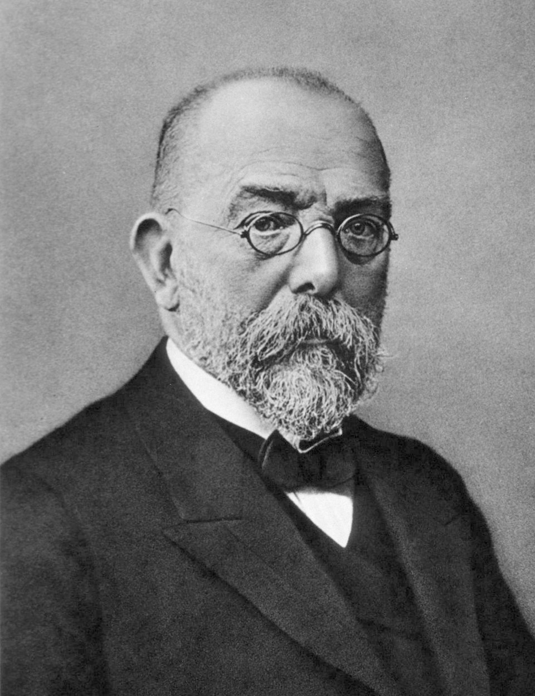

Un médico alemán anuncia haber descubierto el germen que causa la tuberculosis
El doctor Robert Koch ha anunciado ante la Sociedad de Fisiología de Berlín que aisló el germen causante de la tuberculosis, la peste blanca que mata a uno de cada siete europeos. Mostró sus preparados al microscopio en un silencio absoluto. Por primera vez, la tisis tiene rostro: es un microbio, y contra un microbio cabe luchar.

Ante la Sociedad de Fisiología de Berlín, reunida anoche en su sala de la calle Dorotheenstrasse, el doctor Robert Koch, médico llegado de la provincia, ha comunicado un hallazgo que puede mudar la faz de la medicina: ha aislado y visto el germen que causa la tuberculosis, la enfermedad que siega a uno de cada siete europeos y que el vulgo llama la peste blanca. No se limitó a afirmarlo. Trajo consigo sus microscopios y sus preparados teñidos, y fue mostrando a los sabios, uno tras otro, los diminutos bastones azulados que, según sostiene, son la causa material de la tisis.
El método, según expuso, es de una paciencia inaudita. Halló los bastoncillos en el tejido enfermo de hombres y de reses muertas de tisis; los tiñó con un procedimiento nuevo que los hace visibles donde antes nada se veía; los cultivó fuera del cuerpo, en un suero solidificado, generación tras generación; y luego, inoculando esos cultivos en animales sanos, reprodujo en ellos la misma dolencia. La cadena queda así cerrada: donde está el bacilo está el mal, y sin el bacilo no hay mal. Es la prueba que hasta hoy faltaba para afirmar que la tuberculosis no se hereda ni brota del aire viciado, sino que se contagia de un pecho a otro.
Para medir la nueva conviene recordar lo que la tisis significa. No hay enfermedad que mate más en Europa: consume por igual al pobre en su conventillo y al poeta en su buhardilla, y por su lentitud pálida se la tuvo largo tiempo por un sino romántico antes que por un contagio. Los médicos disputaban desde hacía décadas sobre su origen: unos la creían hereditaria, escrita en la sangre de las familias; otros, hija de los miasmas y del aire corrompido de las ciudades. Si Koch está en lo cierto, todos erraban: el enemigo no es el linaje ni el aire, sino una criatura viva, invisible, que pasa de un cuerpo a otro.
Cuentan quienes estuvieron en la sala que, mientras Koch hablaba, se hizo un silencio absoluto, sin una pregunta ni una objeción, cosa rara entre doctores acostumbrados a disputarlo todo. Los preparados pasaban de mano en mano, y cada cual, al apartar el ojo del microscopio, quedaba mudo. Entre los presentes se hallaba un joven médico, Paul Ehrlich, que habría de confesar más tarde que aquella velada fue la experiencia científica más honda de su vida. No hubo aplausos estruendosos, sino esa gravedad de los que sienten que asisten a algo que sus maestros no vieron y que sus discípulos no habrán de olvidar.
¿Qué esperanza abre este descubrimiento? El diario obra con prudencia: conocer al enemigo no es aún vencerlo, y nadie ha anunciado todavía remedio alguno contra la peste blanca. Pero por primera vez la tisis tiene rostro, y ese rostro es un microbio que se puede ver, cultivar y perseguir. Sabiendo que se contagia, cabe aislar a los enfermos, limpiar las viviendas y cortar los caminos del mal. Quizá pasen años antes de que esto alivie una sola cama de hospital. Y sin embargo, algo esencial ha cambiado esta noche en Berlín: la enfermedad que parecía un destino ha empezado a parecer un problema que la razón podrá resolver.